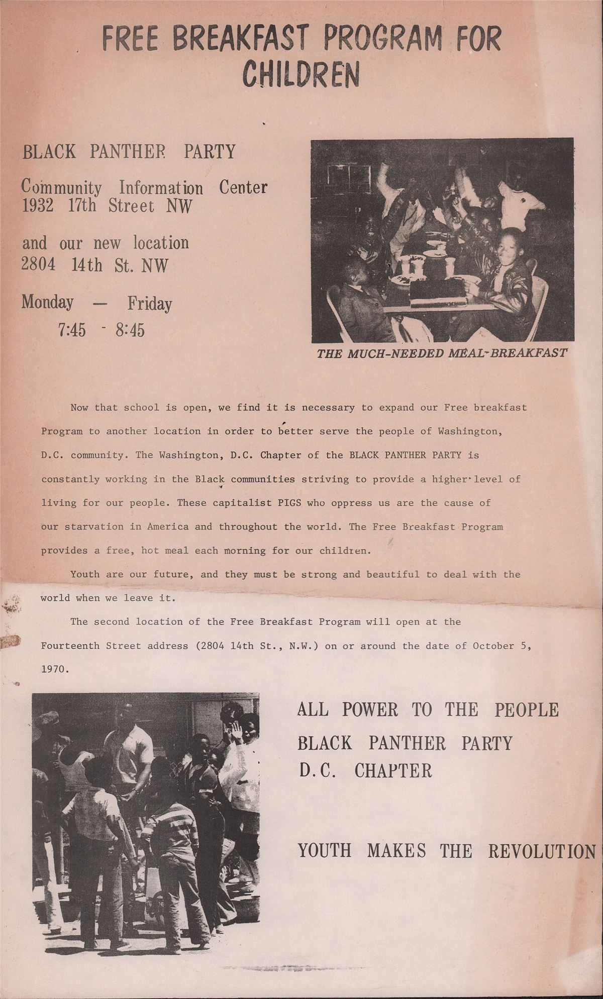

« Servir le peuple, corps et âme » : c'était le mot d'ordre. Les Panthers appelaient ça des programmes de survie, en attendant la révolution. Pour Mamie, c'est la plus belle leçon du parti : on ne gagne pas un quartier avec des discours, mais en étant là quand les gamins ont faim.
Le principe
- Gratuitsans condition, sans questionnaire, sans charité humiliante
- Par le quartierdes bénévoles du coin, des commerçants mis à contribution
- Politiquechaque service montre ce que l'État refuse de faire
- Pour durer« survie en attendant la révolution », pas à la place
Les petits-déjeuners gratuits

Le premier petit-déjeuner gratuit pour les enfants est servi au tournant de 1968 et 1969, dans l'église Saint-Augustine d'Oakland. L'idée est simple : un enfant qui a faim n'apprend rien à l'école. Œufs, pain, lait, servis chaque matin avant la classe par des militantes et militants, avec l'aide de parents, de pasteurs et de commerçants du quartier.
Le programme s'étend à toutes les sections : entre 1969 et 1971, plusieurs dizaines de lieux fonctionnent dans le pays, et des milliers d'enfants sont nourris chaque jour. Le FBI fait tout pour le casser : il fait peur aux parents, fait pression sur les églises, la police saccage des locaux. Quelques années plus tard, l'État fédéral généralise les petits-déjeuners à l'école : la meilleure preuve que les Panthers avaient raison.
Les cliniques populaires
Dans les quartiers noirs, se soigner coûte cher, et les hôpitaux traitent mal les patientes et patients noirs. Les Panthers ouvrent des cliniques médicales gratuites, les People's Free Medical Clinics : une douzaine à une quinzaine dans le pays selon la sociologue Alondra Nelson. Elles fonctionnent avec des médecins, des infirmières et des étudiants en médecine bénévoles, souvent venus de réseaux soignants militants nés pendant le mouvement des droits civiques, ceux-là mêmes qui ont inventé le soin en manif (voir nos fiches Street medic).
On y fait des consultations, des vaccins, des tests de plomb dans le sang, de tuberculose, de tension. L'une d'elles, à Seattle, existe encore aujourd'hui.
La drépanocytose : la maladie qu'on ignorait
La drépanocytose est une maladie génétique du sang qui touche surtout les personnes d'ascendance africaine. Au début des années 1970, la médecine américaine s'y intéresse peu. Les Panthers lancent une grande campagne de dépistage gratuit dans les quartiers, et en font une question politique : si la maladie touchait les Blancs, on chercherait. Cette mobilisation pèse dans l'adoption d'une loi fédérale sur la drépanocytose en 1972.
Écoles, chaussures, prisons
| Programme | Ce qu'il faisait |
|---|---|
| Écoles de la libération | À partir de 1969, des écoles d'été, puis l'école communautaire d'Oakland (1971-1982), reconnue pour sa qualité. |
| Vêtements et chaussures | Distribution gratuite, souvent fabriquée ou récupérée par les militants. |
| Bus vers les prisons | Transport gratuit pour que les familles puissent rendre visite aux détenus. |
| Désintoxication | À New York, Lincoln Detox soigne les personnes dépendantes à l'héroïne avec l'aide des Young Lords. |
| Accompagnement des anciens | Des militants escortent les personnes âgées pour aller chercher leur pension sans se faire voler. |
Pourquoi le FBI avait si peur des tartines
Un enfant qui mange chaque matin grâce aux Panthers, des parents qui voient la clinique ouverte quand l'hôpital ferme ses portes : voilà qui gagne la confiance de tout un quartier. Pour le pouvoir, c'était bien plus dangereux que les fusils. Les programmes de survie montraient qu'une communauté peut répondre elle-même à ses besoins, et qu'elle n'a pas besoin de l'État pour ça. C'est exactement ce que les anarchistes appellent l'entraide (voir la fiche L'Entraide de Kropotkine).
Et aujourd'hui ?
Les cantines solidaires, les permanences de soin, les maraudes, les brigades de solidarité populaire nées pendant l'épidémie de covid en 2020 : beaucoup de collectifs reprennent, sans toujours le savoir, l'héritage des programmes de survie. Pour monter le tien, voir le tiroir Agir ensemble.
Sources et pour aller plus loin
Lire
- Body and Soul: The Black Panther Party and the Fight against Medical Discrimination, Alondra Nelson, University of Minnesota Press, 2011.Les cliniques, la drépanocytose et le soin comme lutte. En anglais.
- L'Entraide, de KropotkineLa fiche de lecture : pourquoi la coopération est une force de la nature et de l'histoire.
Sur le web
- Free Breakfast for ChildrenLe programme de petits-déjeuners gratuits, sur Wikipédia.
- Le Black Panther Party sur WikipédiaLa partie sur les programmes sociaux.
Dossier rédigé par la bande à Mamie à partir de travaux d'historiennes et d'historiens et de textes des mouvements concernés. Libre de reproduction.